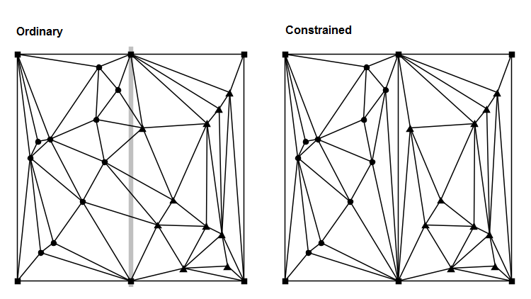
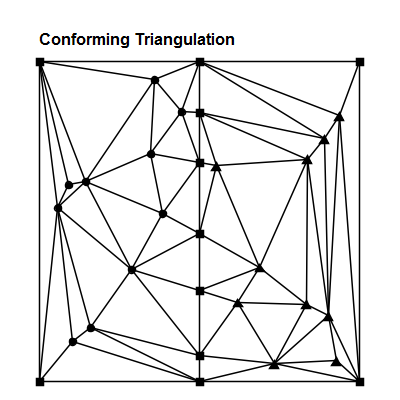
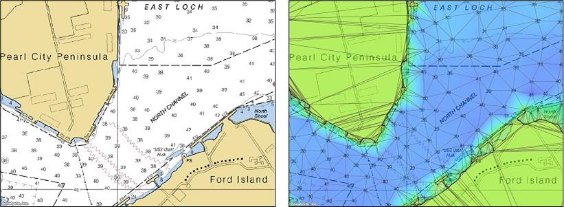
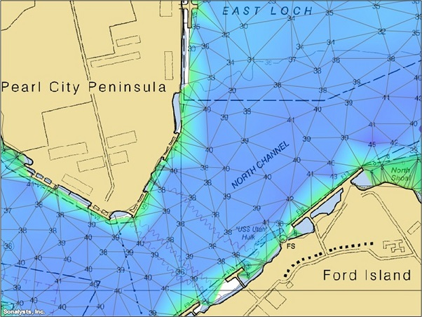

What is the Constrained Delaunay Triangulation
and why would you care?
When I began developing the Constrained Delaunay Triangulation (CDT) for the Tinfour software project, I didn't realize that there would be any need to explain what the CDT was. I thought that the subject would be so well covered on the Internet that there would be nothing I could possibly add to the conversation. But it turned out that while some of the material on the web was quite good, much of it was too technical for readers who weren't already familiar with the applications of the CDT. So, to supplement that information, this wiki entry provides a high-level introduction to the ideas and uses of the Constrained Delaunay Triangulation.
The Delaunay criterion defines a rule that allows systems like Tinfour to organize unstructured sample points (vertices) into a triangular mesh that is optimal in many regards. Part of the process of building that mesh involves selecting which vertices are connected to which of their neighbors. In the ordinary Delaunay triangulation, the process is free to determine which vertices connect to which based on the Delaunay criterion. That optimality makes the Delaunay useful for modeling surfaces and performing data interpolation. But there are applications that require limits, or constraints, on how vertices are connected.
Now let's consider an example where connecting vertices to their immediate neighbors is not necessarily the best treatment of a data set. The Delaunay provides an excellent tool for treating terrestrial surface elevations when they are derived from scattered points such as survey positions, GPS data, or Lidar information. But it is only effective when the elevation data can be modeled as a continuous surface (or, at least, approximated by a continuous surface). Consider what happens when our survey area includes a cliff, or even the edge of a building. The elevation changes instantaneously, and interpolating values across the boundary (be it a cliff, building, or even a road) yields questionable values.
The Constrained Delaunay Triangulation allows us to insert a collection of edges into the triangular mesh that supersede the Delaunay criterion and constrain the way vertices are connected in the mesh.
The figure below illustrates the concept. The data shown occurs in two separate regions. The ordinary Delaunay creates connections between the the separate vertices at will. The constrained Delaunay adds more information to the system in the form of edges that define the limits of the data regions. In the figure, the constraint is shown as the vertical edge at the center of the triangulation.
One of the drawbacks of adding constraints to the triangulation is that not all the triangles in the mesh will necessarily conform to the Delaunay criterion. In particular, the constraint may give rise to "skinny" triangles such as those that appear near the constrained edge in the figure above. Such artifacts are often undesirable when using the triangulation to interpolate values or model a surface. Also, many applications take advantage of the fact that the Delaunay Triangulation is easily mapped to another important graphical structure, the Voronoi Diagram. If the addition of constraints renders the triangulation non-Delaunay, it no longer has an associated Voronoi Diagram.
One way to restore Delaunay optimality was described by Rognant, et al. (see below), who also offered a brief mathematical proof of the technique. Rognant's technique adds synthetic points along the constraint edges as illustrated in the figure below. The constraint edges are subdivided into smaller edges and the resulting triangles all conform to the Delaunay criterion. Optimality is restored.
Rognant described a number of methods for selecting where to add points to the constraint edges in order to restore Delaunay conformance. Tinfour implements a method in which constraint edges are progressively divided at their midpoints until conformance is restored. This method was selected because it tended to add the fewest extra vertices to the mesh. Restoring conformance is an optional function provided by the add-constraints method in the Tinfour incremental TIN classes.
The image below shows triangulations based on the outline of the letters C, D, and T. It was created using the LogoCDT application which is included with the example code in the Tinfour distribution. The first triangulation is an ordinary Delaunay Triangulation. Because the back of the letter D is not a Delaunay compliant edge, it was omitted from the mesh by the vertex-connection logic. In the second triangulation, the outlines were added as a series of constrained edges, so the missing edge was restored. The outer bounds of a Delaunay Triangulation is always a convex polygon, so the first two triangulations include edges that are exterior to the letters. The LogoCDT application specified the letter shapes using Tinfour's PolygonContraint class. The polygon-based constraint provides a way of dividing the overall TIN extent into separate sub regions (the data and non-data areas). The rendering logic in LogoCDT used this information to decide which edges to suppress when it drew the image.
Let's conclude this wiki page with a practical example. Geographic Information Systems (GIS) use constraints to support a feature called "breaklines". Breaklines are line-based representations of geophysical features such as cliffs, roads, rivers, or shorelines that represent discontinuities in the surface. These linear features need to be preserved in the triangulation to provide a correct treatment of the data. Let's consider the case of a shoreline.
The company I work for has a pretty neat weather and mapping application called wXstation. I did a quick hack to integrate the Tinfour libraries into the application to demonstrate bathymetry (water depth) modeling. The numbers shown in the nautical image to the left below indicate _soundings_ collected at scattered points over the harbor. The soundings give water depth in feet. If the they are connected in an ordinary Delaunay Triangulation, the edges cross land and the interpolated surface could indicate that at least some of the terrestrial areas are underwater as shown in the picture to the right.
We can correct this misrepresentation by adding the shoreline as a set of constraint edges. The result is shown below.
Rognant, et al (1999). The Delaunay constrained triangulation: The Delaunay stable algorithms. "IEEE International Conference on Information Visualization 1999", pg. 147-152.